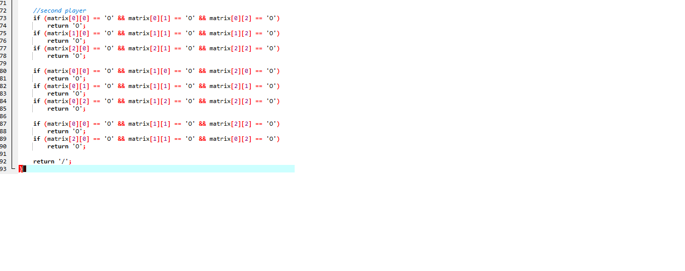

V tej spletni strani vam bom predstavil kako sem naredil mojo igrico Tic Tac Toe.
1.Najprej sem vptipkal osnovno kodo v program Dev-C++.
2.Vpisal sem neke druge komande
Na teh slikah ste lahko videli moj postopek kako sem naredil igrico. Brez youtube-a 100% se ne bih znajdel. Dol si lahko ogledate še kako je igrica delala kot jo prižgemo. Upam da je to to kaj ste vi želeli, hvala in lep pozdrav.